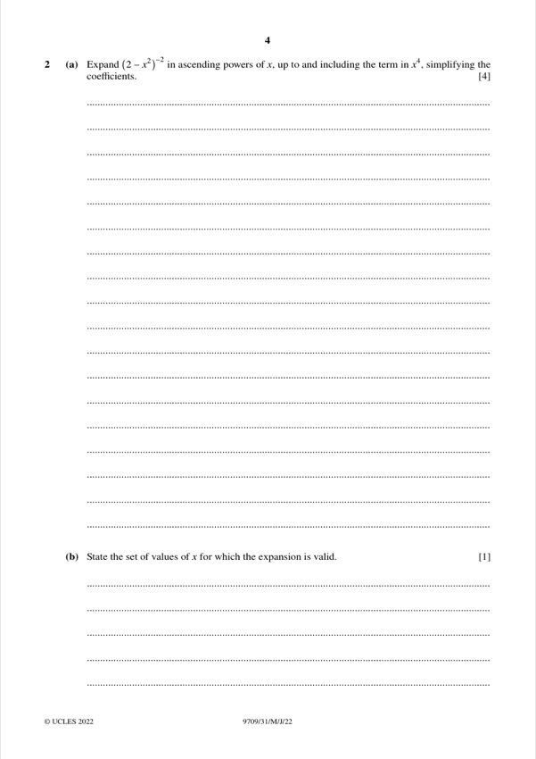
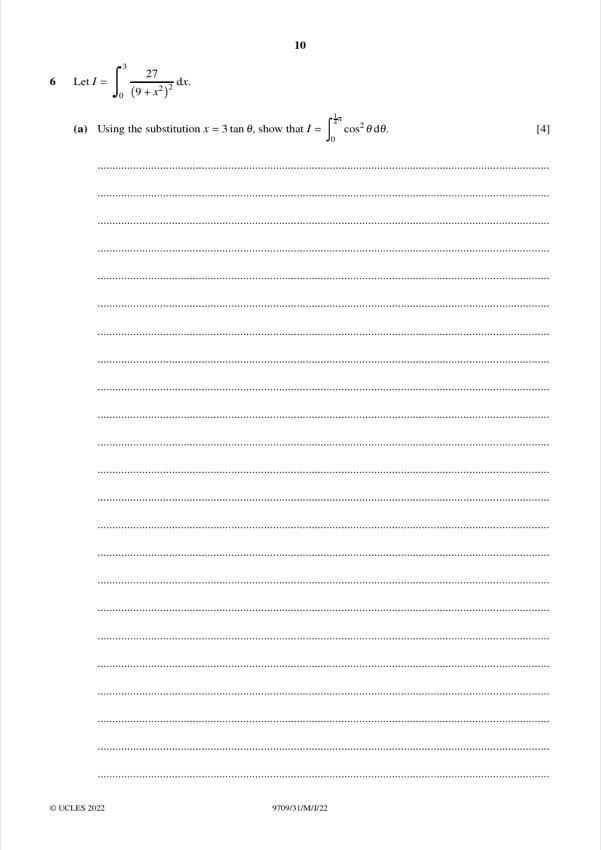
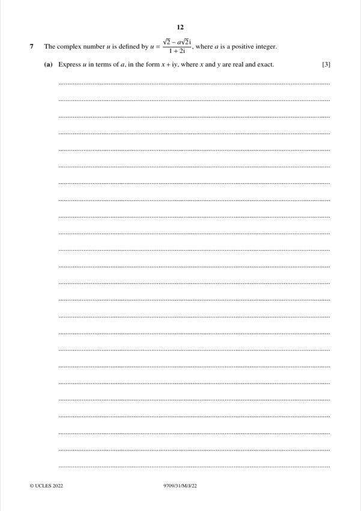
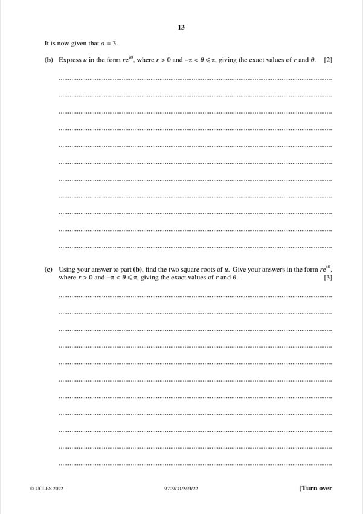
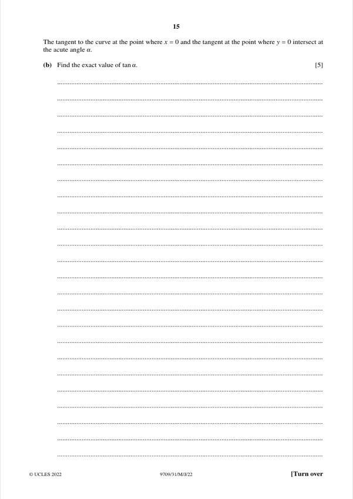
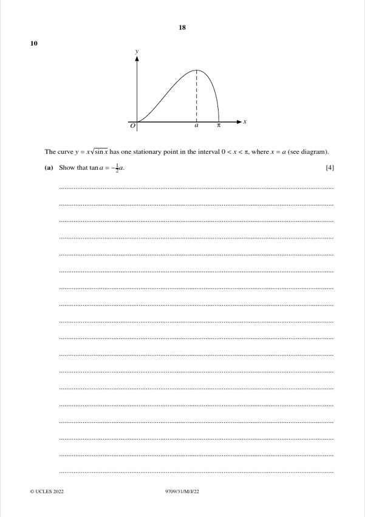
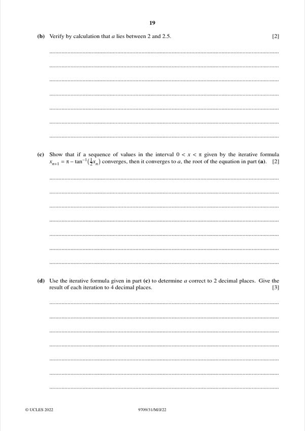

Question 1 [4]

Original paper page 3
Solve 2·3^(2x−1) = 4^(x+1), correct to 2 decimal places.
ln 2 + (2x − 1)ln 3 = (x + 1)ln 4
x(2ln 3 − ln 4) = ln 4 + ln 3 − ln 2 = ln 6
x = ln 6 / ln(9/4) = 1.79176/0.81093
x = 2.21
Mathematics Paper 3 (Pure Mathematics 3)
Solve 2·3^(2x−1) = 4^(x+1), correct to 2 decimal places.
x = 2.21

(a) [4] Expand (2 − x²)⁻² in ascending powers of x up to and including x⁴.
1/4 + x²/4 + 3x⁴/16
(b) [1] State the values of x for which the expansion is valid.
−√2 < x < √2

Solve 2cot2x + 3cotx = 5 for 0° < x < 180°.
x = 35.1°, 99.9°

dy/dx = xy/(1 + x²), with y = 2 when x = 0. Solve the differential equation.
y = 2√(1 + x²)

(a) [5] p(x) = ax³ − 10x² + bx + 8, with (x − 2) a factor of p(x) and p′(x). Find a and b.
a = 3, b = 4
(b) [3] Factorise p(x) completely.
p(x) = (x − 2)²(3x + 2)

(a) [4] I = ∫₀³ 27/(9 + x²)² dx. Using x = 3tanθ, show that I = ∫₀^(π/4) cos²θ dθ.
Shown
(b) [4] Hence find the exact value of I.
I = π/8 + 1/4 = (π + 2)/8

(a) [3] u = (√2 − a√2 i)/(1 + 2i). Express u in the form x + iy.
x = √2(1 − 2a)/5, y = −√2(a + 2)/5

(b) [2] With a = 3, express u in the form re^(iθ).
u = 2e^(−3πi/4)
(c) [3] Find the two square roots of u in the form re^(iθ).
√2 e^(−3πi/8) and √2 e^(5πi/8)

(a) [4] The curve x³ + y³ + 2xy + 8 = 0. Express dy/dx in terms of x and y.
dy/dx = −(3x² + 2y)/(3y² + 2x)

(b) [5] The tangents at x = 0 and at y = 0 intersect at acute angle θ. Find the exact tan θ.
tan θ = 4/3

(a) [3] OABCDEFG is a cuboid with OA = 2, OC = 4, OG = 2. M is the midpoint of DF, and N on AB with AN = 3NB. Express OM and MN.
OM = i + 2j + 2k, MN = i + j − 2k
(b) [2] Find a vector equation of the line through M and N.
r = i + 2j + 2k + t(i + j − 2k)
(c) [4] Show that the length of the perpendicular from O to this line is √(53/6).
Shown

(a) [4] y = x√(sin x) has one stationary point at x = a in (0, π). Show that tan a = −½a.
Shown

(b) [2] Verify that a lies between 2 and 2.5.
Shown
(c) [2] Show that if x_(n+1) = π − arctan(½x_n) converges, it converges to a.
Shown
(d) [3] Use the iteration to find a to 2 d.p. (4 d.p. at each step).
a = 2.29